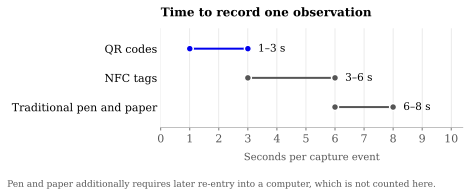
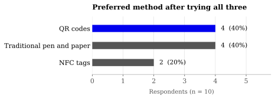

Whether scanning a code beats writing on a clipboard when you are recording dosing events, and a small tool that implements the faster of the two.
Open the capture app → · Source and data on GitHub
Trial data still gets written on paper. The cost is not the writing — it is that someone later has to type the same numbers into a computer a second time. That second pass is where the hours and the transcription errors come from, and it is invisible in any measurement that only times the original act of writing.
Both QR codes and NFC tags remove the second pass. You scan, and the record is already structured and already timestamped. The question here is how much that actually saves, and which of the two is the better bet.

| Method | Seconds per event | Needs later re-entry |
|---|---|---|
| QR codes | 1–3 | No |
| NFC tags | 3–6 | No |
| Traditional pen and paper | 6–8 | Yes |
QR scanning was roughly two to three times faster per event than writing by hand, and NFC sat between the two. The re-entry column matters more than the seconds column: the paper arm is the only one that incurs a whole second pass over every record, so the real gap in total labour is wider than these numbers show. I did not time the re-entry pass, so I am not going to put a figure on it.

Ten people doing pre-clinical research used all three methods and then chose one. Preference split evenly between QR and paper.
This is the result people usually skip past, and it is the most interesting one here: being measurably faster did not make QR the preferred method. Four of ten still wanted the clipboard. With n = 10 this is directional at best and carries no statistical weight, but it points at something real — the barrier to electronic capture in the animal house is habit and trust, not speed. Any rollout that assumes people will switch because the stopwatch says so is going to be disappointed.
They are not interchangeable, and the right answer depends on what the site actually needs.
| NFC tags | QR codes | |
|---|---|---|
| Mechanism | Short-range radio between two devices | Two-dimensional barcode read by a camera |
| Range | A few centimetres — must be tapped | Readable at a distance, scaling with printed size |
| Capacity | Several kilobytes | A few hundred characters |
| Security | Harder to capture: proximity is required | Weaker: anything that can see it can copy it |
| Cost | Higher — each tag is a physical chip | Near zero — it prints on anything |
| Device support | Uneven, and absent on some phones | Any phone with a camera |
| Duplication | Hard, which is a feature for custody | Trivial, which is a hazard |
In practice QR won on speed, cost and the fact that it works on every phone anyone brought. NFC's advantage is real but narrow: because a tag has to be physically tapped, it is much harder to fabricate a reading you did not take. If your risk is someone photographing a code and recording doses they never gave, NFC is worth the money. Otherwise QR is the better default.
A dosing event is encoded as pipe-delimited plain text:
CTDE1|subject|cage|drug|dose|unit|route|operator
Plain text rather than a URL, because a label that resolves to a server is useless without signal and phones home for no reason. Pipe-delimited rather than JSON, because at QR sizes the punctuation is a real cost. Every field is percent-encoded, so a pipe inside a value cannot split the record. CTDE1 is a version marker, so a later CTDE2 can change the field list without old and new labels being confused.
This is the part that would have to be agreed between sites for one group's scanner to read another group's labels. That agreement, not the scanning, is the hard part of the standardisation point above.
A single-page capture tool. No build step, no server, no network. Open it and it works.
Records stay in your browser's local storage. Nothing is uploaded, and there is no backend to upload to. The camera and NFC both need a secure context, so use this page over HTTPS or on localhost.
The observed summaries, the figure-rendering code, the label format and a browser-free test that encodes an event, renders it to a real QR matrix and scans it back are all on GitHub. The per-event dataset in that repository is synthetic and labelled as such on every row — the original per-event readings were not retained, so it exists to let the analysis code run, not as evidence.